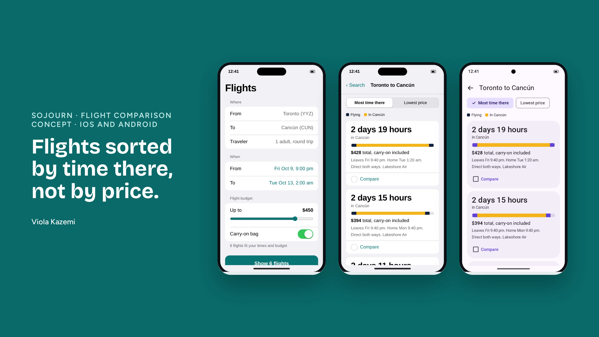

Design an app or website for searching for flights or comparing options, taking into account one-way, round-trip and multi-stop trips, and baggage fees. The hard part named in the prompt is making a lot of data look simple.
I asked two questions before designing: is this for travelers or for airline staff, and is the traveler bound by time or by budget? With no answers given, I made three assumptions.
A mobile app that helps leisure travelers with a fixed long weekend compare flights and pick the one that gives them the most time at their destination.
A solo traveler in Toronto. On October 2 he realizes Thanksgiving is his last long weekend before Christmas, and he wants a beach trip to Cancún. He can be at the airport from 9 pm on Friday and needs to be home by 2 am on Tuesday, so he can rest before work.
He worries that something hidden will ruin the plan: a layover that eats half a day, or a bag fee that appears at checkout. Most flight apps also leave him to work out his time away from four clock times.
I chose to solve that uncertainty. Results are sorted by time at the destination, with price as the second sort. I deliberately left out a cheapest-first default, and I left out flight delays, because they happen after booking and the app cannot predict them.
Toronto, one traveler and round trip are defaults he never has to touch. He sets where, when, his flight budget and his bag. The count of matching flights updates as he moves the budget, then he compares, chooses, reviews and books.
Every result shows the same facts in the same order, and the app does the math he would otherwise do himself.
A bar on each card shows flying time and time at the destination across his weekend, so options can be compared by eye. Picking two flights opens a side-by-side view that states the trade in one sentence.
The flow is the same on both platforms. The components follow each platform's own guidelines.
| Element | iOS | Android |
|---|---|---|
| Title | Large title | Top app bar |
| Form | Grouped rows | Outlined fields with labels |
| Sort | Segmented control | Filter chips |
| Compare action | Bottom toolbar button | Floating action button |
| Compare screen | Sheet with Done | Full screen with a close icon |
The share of time-bound travelers who book from the default sort without switching to price. Booking rate alone could rise because fares dropped that week.
The prototype was built with Claude from my design decisions. Flights and prices in it are sample data.